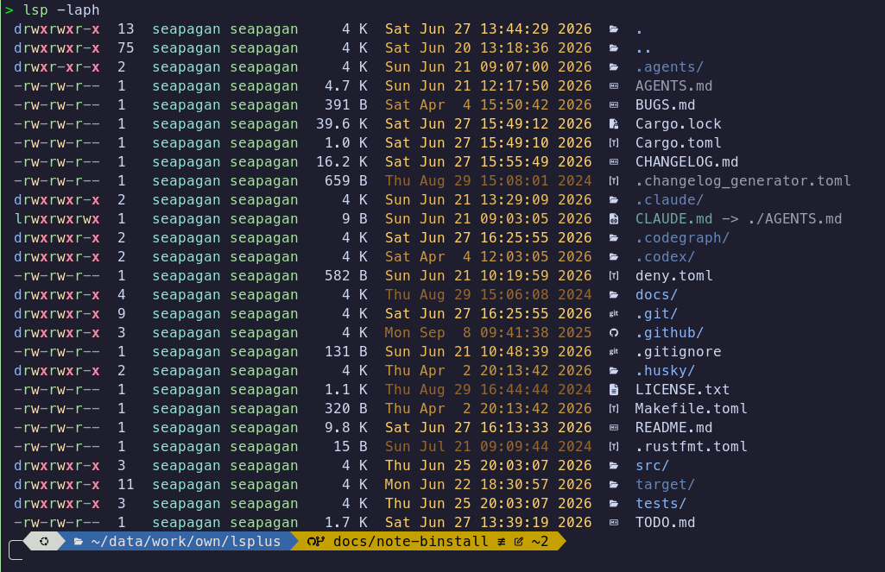
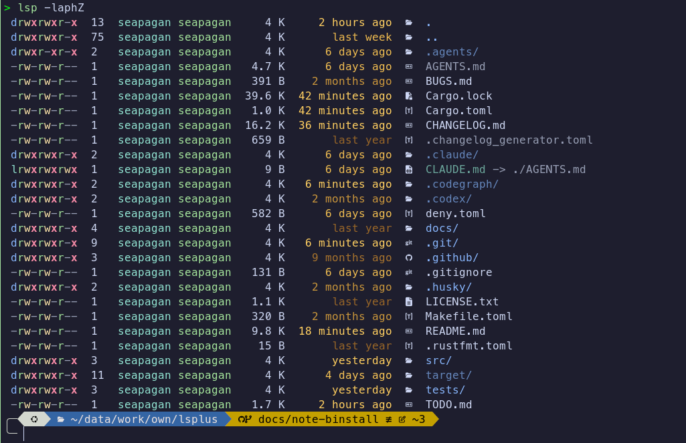
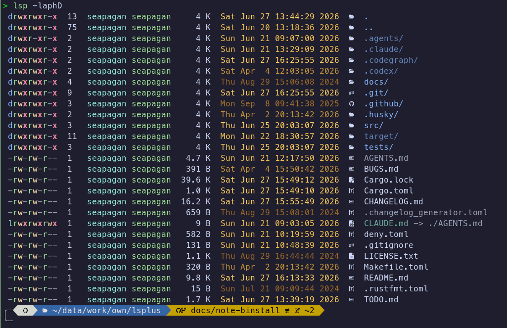

An ls replacement written in Rust
This is currently a very simple (though functional) clone of the Unix ‘ls’ command written in Rust. It is a learning project for me to learn Rust so probably contains many inefficiencies and bad practices. I’ll get better 😁

Compatibility
This project is currently only compatible with Unix-like systems (Linux, MacOs, etc.). Windows support is planned to be added very soon.
Nerd Fonts
To display the folder and file icons, you need to first install a ‘Nerd Font’ for your terminal. You can find a great selection of Nerd Fonts here
My personal favourite is MesoLG Nerd Font, but there are many others to choose
from. You will also need to set up your terminal to use that font.
If you DO NOT want to install a Nerd Font, pass the --no-icons switch to
the program.
Installation
To install the latest release of this package, you can use the following command:
Download a Binary
For Linux and Mac you can download the latest binary files from the release
page. Unpack the archive
and move the single file lsp to somewhere in your path so it can be located.
Ensure it is set as executable (though it already should be).
These binaries are auto-generated for each release.
Using Cargo
If you have rust installed, you can install the latest release of this package, using the following command:
cargo install lsplus
This will install the lsp binary into your ~/.cargo/bin directory. Make
sure that this directory is in your PATH environment variable so that you
can run the lsp command from anywhere.
From Source
You can also install the package from the GitHub repository by running the following command:
cargo install --git https://github.com/seapagan/lsplus.git
This may allow you to access the latest features and bug fixes that have not yet been released.
Usage
Run this command in your terminal to list files in the current directory:
lsp <options> <path | file>
Both the options and the path are optional. If no path is provided, the current
directory will be listed. If no options are provided, the default options will
be used which are similar to the ls command.
Curently, only a sub-set of the standard ls options are supported. These are:
-a/--all- Show hidden files-A/--almost-all- Show hidden files, but don’t show.and `..-p/--slash-dirs- Append a ‘/’ to directories-l/--long- Show long format listing-h/--human-readable- Human readable file sizes-D/--sort-dirs- Sort directories first-I/--gitignore- Dim entries matched by Git ignore rules-N/--no-color- Disable colored and styled output--no-icons- don’t show file or folder icons-V/--version- Print version information and exit-Z/--fuzzy-time- Show fuzzy time for file modification times
You can combine the short options together, e.g. -laph will show a long format
listing with hidden files, append a ‘/’ to directories, and show human-readable
file sizes.
Use the --help option to see the full list of options.
Styled output is enabled automatically when writing to a terminal. Captured,
piped, and redirected output is plain by default. You can also disable styled
output explicitly with --no-color, no_color = true in the config file, or
the NO_COLOR environment variable.
When -I is enabled, lsp checks the same ignore sources Git normally uses:
merged .gitignore files in the worktree, .git/info/exclude, and the
configured global Git excludes file.
Fuzzy Time
The -Z option will show a fuzzy time for file modification times. This will
show the time in a human-readable format, e.g. ‘2 hours ago’, ‘yesterday’, etc.

Icons
Icons are added to folders, files, and links. There is only a limited set of mappings implemented at the moment, but more will be added in the future. Add an issue if you have a specific icon you would like to see - even better, add a Pull Request implementing it! :grin:
You can disable the icons by using the --no-icons option.
Aliases
The lsp command can be aliased to ls by adding the following line to your
.bashrc, .zshrc or similar file:
alias ls='lsp'
You will need to restart your shell or source your configuration file for the alias to take effect.
The example below shows an alias for ls that uses many of the current options:
alias ll='lsp -laph'
This will show a long format listing with hidden files, append a ‘/’ to directories, and show human readable file sizes.
You can also use the configuration file to set the default options you want.
If you add the ‘-D’ option to the command, directories will be sorted first:

Configuration File
It is possible to configure lsplus using a configuration file. The
configuration file is a simple TOML file that is placed in the following
location:
- Linux:
~/.config/lsplus/config.toml - MacOS:
~/.config/lsplus/config.toml
The configuration file is optional and if it is not found, lsplus will use the
default settings.
Available Options
The following options are available in the configuration file and correspond to the relevant command line options:
show_all
- Permitted values:
trueorfalse - Default value:
false
This option corresponds to the -a or --all command line option and will
display all files and directories if set to true, including hidden files.
almost_all
- Permitted values:
trueorfalse - Default value:
false
This option corresponds to the -A or --almost-all command line option and
will display all files and directories if set to true, except for . and
...
append_slash
- Permitted values:
trueorfalse - Default value:
false
This option corresponds to the -p or --slash-dirs command line option and
will append a slash to directories if set to true.
dirs_first
- Permitted values:
trueorfalse - Default value:
false
This option corresponds to the --sort-dirs command line option and will
long_format
- Permitted values:
trueorfalse - Default value:
false
This option corresponds to the --long command line option and will display the
output in long format if set to true.
human_readable
- Permitted values:
trueorfalse - Default value:
false
This option corresponds to the -h or --human-readable command line option
and will display file sizes in human readable format if set to true.
no_icons
- Permitted values:
trueorfalse - Default value:
false
This option corresponds to the --no-icons command line option and will not
display icons if set to true.
no_color
- Permitted values:
trueorfalse - Default value:
false
This option corresponds to the -N or --no-color command line option and
will disable colored and styled output if set to true.
gitignore
- Permitted values:
trueorfalse - Default value:
false
This option corresponds to the -I or --gitignore command line option and
will dim entries that are matched by the active Git ignore rules, including
merged .gitignore files, .git/info/exclude, and the configured global Git
excludes file.
fuzzy_time
- Permitted values:
trueorfalse - Default value:
false
This option corresponds to the -Z or --fuzzy-time command line option and
will display the time in a ‘fuzzy’ format if set to true.
Example Configuration File
The following is an example configuration file that sets several options. Any options that are not set will use the default values:
show_all = true
append_slash = true
dirs_first = true
human_readable = true
no_color = true
fuzzy_time = true
gitignore = true
Future Plans
Below is the content of the project’s TODO.md file.
If you have any suggestions for features or improvements, please open an issue on the project’s GitHub page.
TODO
- add colorization for different file types, folders and symlinks. Make it customizable and theme-able. Make it default but allow an option to disable it (or vice-versa). Files that have a known extension should all be colored the same way, and different to unknown file tipes.
- Add icons for partials like
TODO.*,LICENSE.*and more - brands like claude, codex, vscode and more where the nerdfont exists - using the config file, allow extending the existing file and folder mapping, or deleting specific maps.
- add a -R flag to recursively list files in a directory.
- When adding recursion or tree-style output, revisit whether directory
traversal should move over to the
ignorecrate instead of the current custom walker. - better handle dotfiles?
- option to list dotfiles (and folders) before non-dotfiles
- Investigate an optional name-shortening mode for very long filenames that preserves extensions without changing the default wrap behavior.
- Consider separating config-loaded values from effective runtime params so
merge behavior is more explicit than the current shared
Paramstype. - Review crate/module visibility and reduce the public surface where items do not need to be exported.
- Continue shifting tests toward behavior-focused checks at module seams
(
app,settings,render) instead of broad smoke-style coverage.